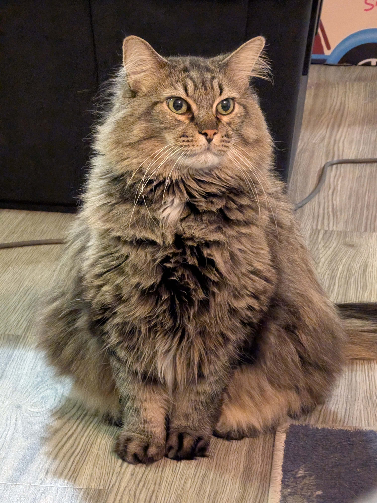

Accomplished IT Professional with over six years of experience specializing in SaaS Administration, IT Engineering, and automation-driven operations. Expert at managing the full SaaS lifecycle from automated provisioning to compliance auditing within complex, fast-paced technical environments. Proven track record in leading large-scale data migrations, implementing identity management solutions, and streamlining support workflows using agentic and script-based automations. Dedicated to architecting scalable solutions that optimize application performance and organizational efficiency.

